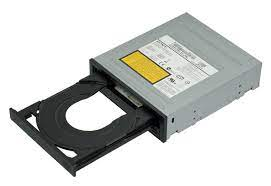

.jpg "IMAGEM")
| HARDWARE | |
Hardware é a parte física do computador, ou seja, o conjunto de aparatos eletrônicos, peças e equipamentos que fazem o computador funcionar.
A palavra hardware pode se referir também como o conjunto de equipamentos acoplados em produtos que precisam de algum tipo de processamento computacional.
.jpg "IMAGEM") | .jpg "IMAGEM") |  |
| COLLERS Coolers controlam temperatura e previnem que componetes sejam danificados pelo calor. Entenda como eless funcionam e as diferenças entre sistemas com ar e com líquido | DISCO RIGIDO(HD) Explicando de forma simples, um disco rígido de computador é um tipo de tecnologia que armazena o sistema operacional, os aplicativos e os arquivos de dados que o computador usa nas suas funções. | DRIVES De forma simples, o driver é um pequeno programa que permite que o sistema operacional do computador possa se comunicar com o dispositivo conectado a ele. Basicamente faz com que um mouse, uma impressora e outros componentes possam ser interpretados pelo sistema e realizem suas ações da forma correta. |
.jpg "IMAGEM") | .jpg "IMAGEM") | .jpg "IMAGEM") |
| FONTES As fontes de alimentação possuem função principal de transformar a corrente elétrica da rede, que chega em uma voltagem alta, para uma voltagem menor, que é a indicada para o hardware do computador. Geralmente a rede elétrica possui a voltagem em 110V ou 220V. | MEMORIA RAM É responsável por dar mais agilidade e velocidade no funcionamento geral do sistema. Sem a memória RAM, tarefas como abrir programas e editar arquivos demorariam muito para serem realizadas. | PLACA DE VIDEO é o componente responsável por exibir imagens na tela. Além disso, ela também pode ser utilizada para rodar games e softwares que demandem muito processamento visual. |
.jpg "IMAGEM") | PLACAS DE SOM A placa de som é o componente do computador que converte os sinais digitais sonoros em áudio analógico, que pode ser interpretado por caixas de som e fones de ouvido |
| PLACAS-MAE É uma peça central responsável por conectar e interligar todos os componentes (processador com memória RAM, disco rígido, placa gráfica). A placa une todas as partes do sistema numa só rede de fios | .jpg "IMAGEM") |
.jpg "IMAGEM") | PROCESSADORES Um processador é uma espécie de microchip especializado. A sua função é acelerar, endereçar, resolver ou preparar dados, dependendo da aplicação. |
| REDE WIRED (COM FIO) Rede de computadores que utiliza de fios e cabos para se conectar e compartilhar dados, software, etc, com outros computadores. Apesar de suas diferenças, tanto a rede cabeada quanto a wireless oferecem vantagens interessantes aos usuários. | .jpg "IMAGEM") |
| OUTRAS INFOS VOCÊ ENCONTRA EM PAGINAS COMO ESSA! | VER MAIS |